Браузерный агент: прогон на трёх файлах
Агент получает изображение, сам проверяет допустимость каждой цели, ведёт внешний инструмент через интерфейс, снимает улики и сводит их в один балл. Каждое число в отчёте помнит, откуда оно взялось. Два файла из трёх — с заранее известным ответом, поэтому отчёт проверяет сам себя, а не просит верить на слово.
Оригинал (контроль) 0.0/100
✔ вердикт совпал с правдой
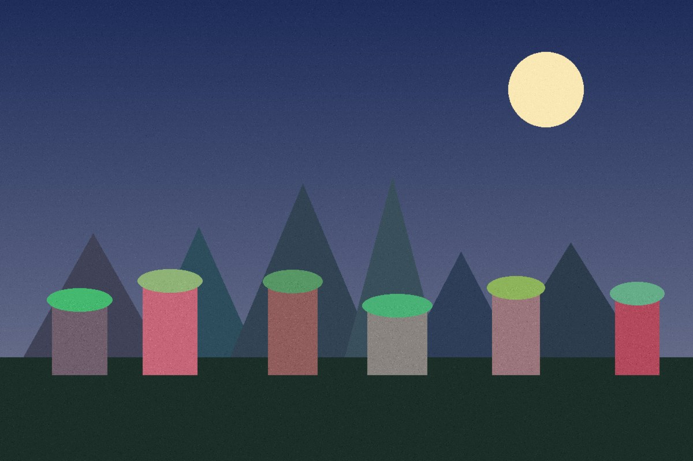
| подлог был на самом деле | нет |
| конвейер сказал | чисто (0.0/100) |
| ни один сигнал не набрал баллов |
прошло local
0.0 с
своя машина, чужих сервисов не трогаем
- container_quality: 88качество JPEG определено сравнением таблицы квантования файла с эталонными таблицами той же библиотеки
- exif: {"Make": "DemoCam", "Model": "DC-216056", "Software": "DemoCam firmware 1.2", "DateTime": "2026:09:23 11:04:17", "ExifTag": "133", "FNumber": "(28, 10EXIF прочитан на месте, без обращения к сервисам
прошло Forensically (29a.ch)
17.5 с
robots.txt не запрещает
- ela_hotspot: {"x0": 118, "y0": 516, "x1": 193, "y1": 554, "blocks": 5, "contrast": 23.93}карта ELA снята с canvas; кластер из 5 блоков с плотной россыпью ярких точек, плотность к фону ×23.93
- noise_hotspot: {"x0": 250, "y0": 516, "x1": 325, "y1": 611, "blocks": 9, "contrast": 12.65}карта шума снята с canvas; кластер из 9 блоков, плотность к фону ×12.65
- clone_view: "снято как улика, в балл не идёт"инструмент не отдаёт результат машиночитаемо; на контрольном подлоге точную копию не показал, подсветил солнце
- metadata_text: "Make: DemoCam\nModel: DC-216056\nSoftware: DemoCam firmware 1.2\nModifyDate: Wed Sep 23 2026 14:04:17 GMT+0300 (Israel Daylight Time)\nFNumber: 2.800таблица Meta Data прочитана по ячейкам — текстом, не картинкой
отказ FotoForensics
0.0 с
robots.txt запрещает /upload-file.php
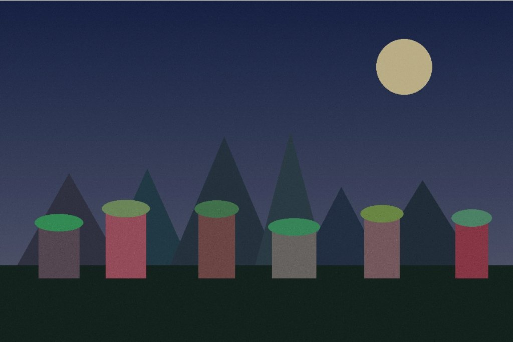
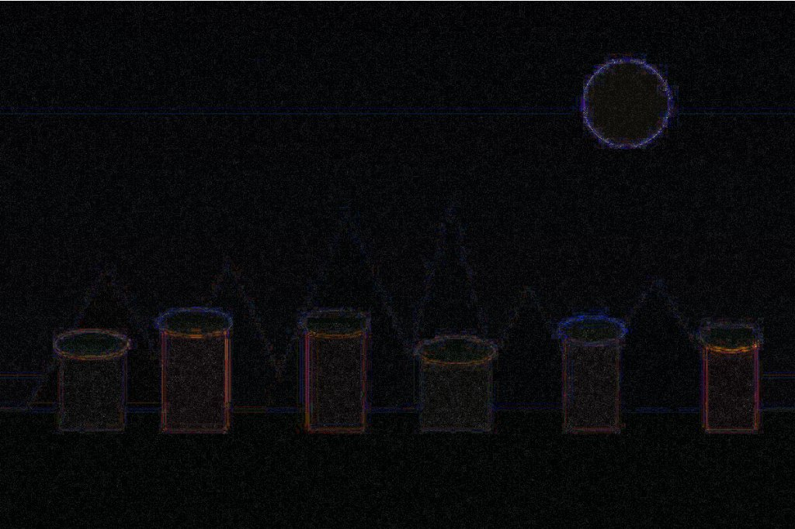

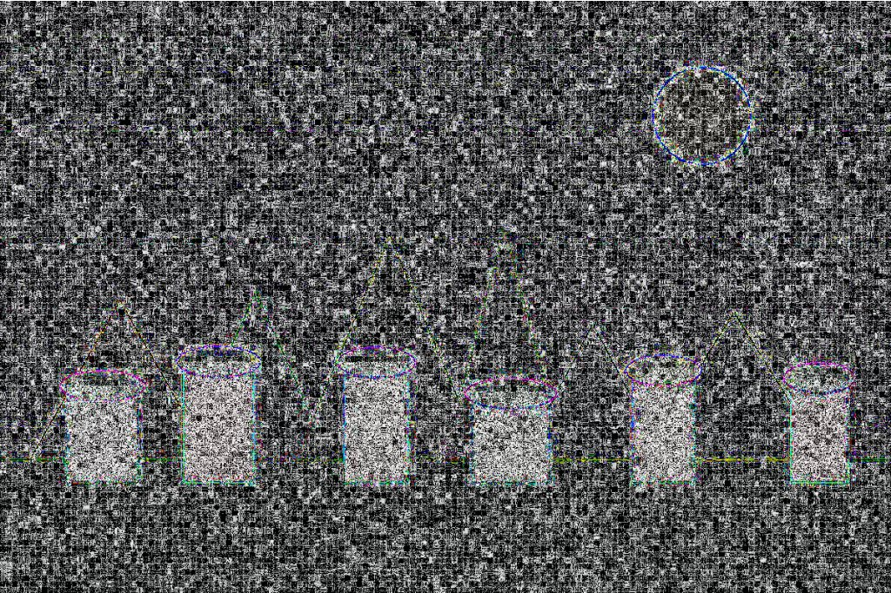
Точная копия без пересохранения 0.0/100
✘ вердикт разошёлся с правдой
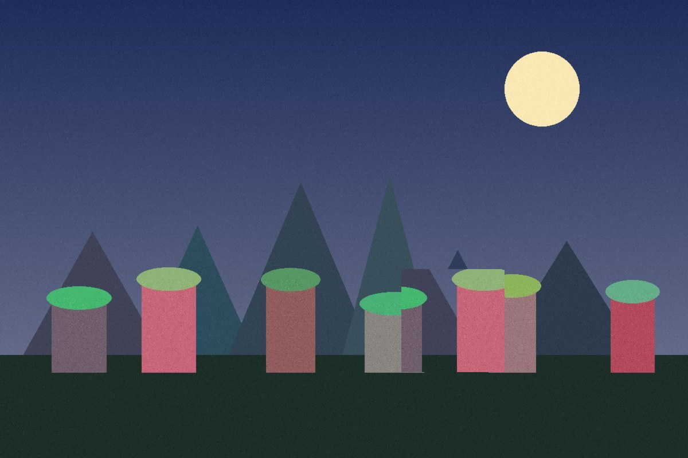
| подлог был на самом деле | да |
| конвейер сказал | чисто (0.0/100) |
| совпадение указанной области с настоящей | IoU = 0.002 |
| ни один сигнал не набрал баллов |
прошло local
0.0 с
своя машина, чужих сервисов не трогаем
- container_quality: 88качество JPEG определено сравнением таблицы квантования файла с эталонными таблицами той же библиотеки
- exif: {}EXIF прочитан на месте, без обращения к сервисам
прошло Forensically (29a.ch)
17.5 с
robots.txt не запрещает
- ela_hotspot: {"x0": 817, "y0": 649, "x1": 892, "y1": 668, "blocks": 4, "contrast": 20.19}карта ELA снята с canvas; кластер из 4 блоков с плотной россыпью ярких точек, плотность к фону ×20.19
- noise_hotspot: {"x0": 817, "y0": 516, "x1": 892, "y1": 573, "blocks": 8, "contrast": 15.31}карта шума снята с canvas; кластер из 8 блоков, плотность к фону ×15.31
- clone_view: "снято как улика, в балл не идёт"инструмент не отдаёт результат машиночитаемо; на контрольном подлоге точную копию не показал, подсветил солнце
отказ FotoForensics
0.0 с
robots.txt запрещает /upload-file.php
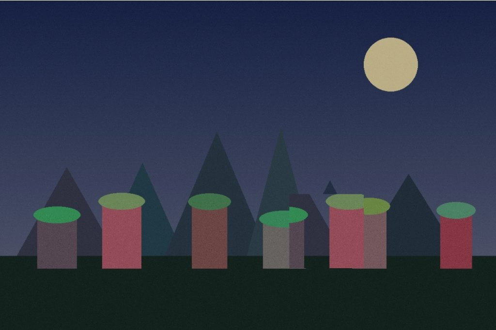
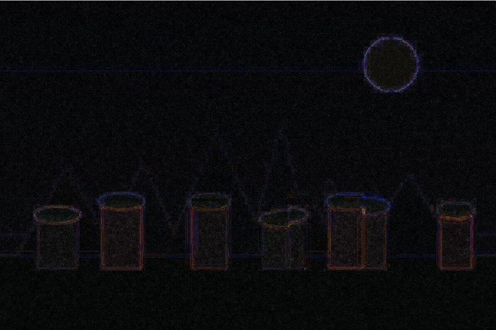

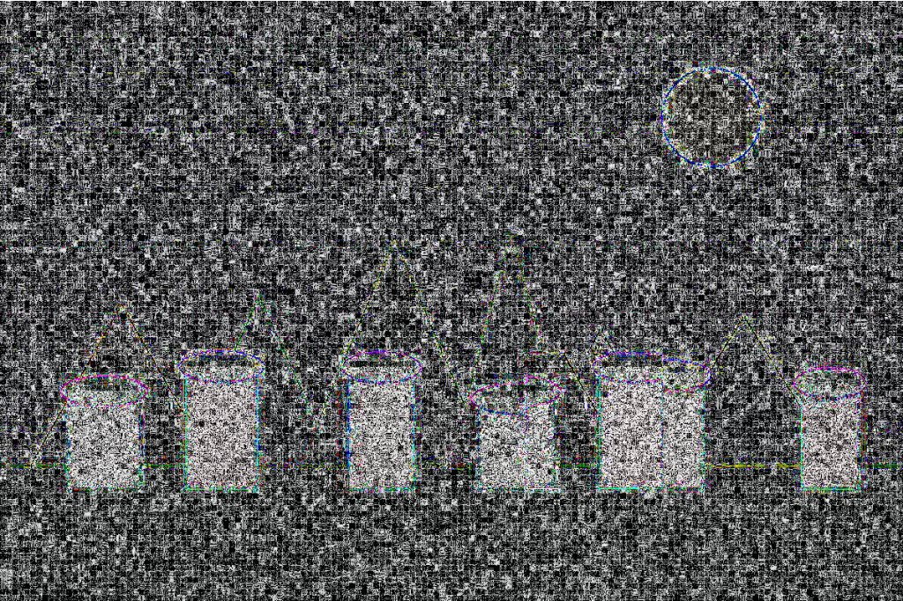
Правка с пересохранением 60.0/100
✔ вердикт совпал с правдой
| подлог был на самом деле | да |
| конвейер сказал | правка (60.0/100) |
| совпадение указанной области с настоящей | IoU = 0.341 |
| +60.0 | из 60 | ela_hotspot карта ELA снята с canvas; кластер из 21 блоков с плотной россыпью ярких точек, плотность к фону ×32.28 |
forensically |
прошло local
0.0 с
своя машина, чужих сервисов не трогаем
- container_quality: 95качество JPEG определено сравнением таблицы квантования файла с эталонными таблицами той же библиотеки
- exif: {"Make": "DemoCam", "Model": "DC-216056", "Software": "DemoCam firmware 1.2", "DateTime": "2026:09:23 11:04:17", "ExifTag": "133", "FNumber": "(28, 10EXIF прочитан на месте, без обращения к сервисам
прошло Forensically (29a.ch)
17.7 с
robots.txt не запрещает
- ela_hotspot: {"x0": 779, "y0": 478, "x1": 892, "y1": 592, "blocks": 21, "contrast": 32.28}карта ELA снята с canvas; кластер из 21 блоков с плотной россыпью ярких точек, плотность к фону ×32.28
- noise_hotspot: {"x0": 817, "y0": 497, "x1": 892, "y1": 592, "blocks": 12, "contrast": 12.24}карта шума снята с canvas; кластер из 12 блоков, плотность к фону ×12.24
- clone_view: "снято как улика, в балл не идёт"инструмент не отдаёт результат машиночитаемо; на контрольном подлоге точную копию не показал, подсветил солнце
- metadata_text: "Make: DemoCam\nModel: DC-216056\nSoftware: DemoCam firmware 1.2\nModifyDate: Wed Sep 23 2026 14:04:17 GMT+0300 (Israel Daylight Time)\nFNumber: 2.800таблица Meta Data прочитана по ячейкам — текстом, не картинкой
отказ FotoForensics
0.0 с
robots.txt запрещает /upload-file.php
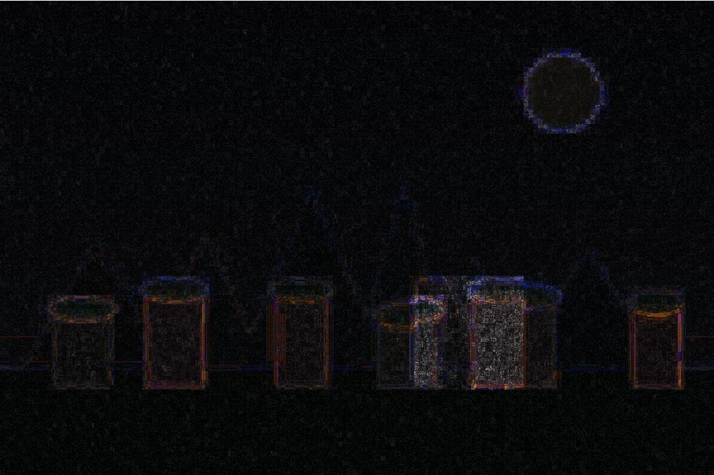
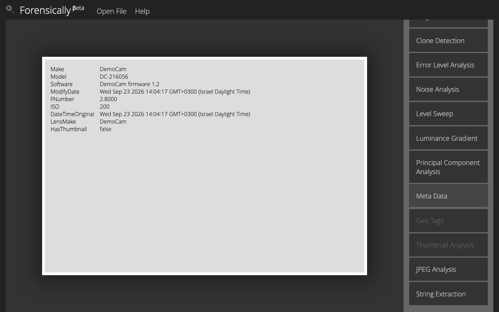
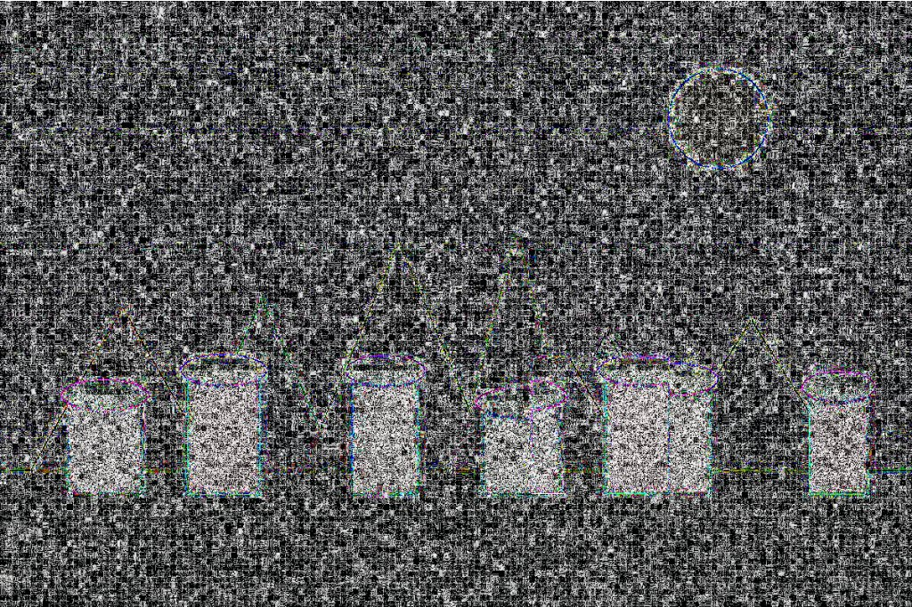
Чего этот PoC не делает — сказано прямо
- Точную копию без пересохранения конвейер не видит. Третий файл — участок, скопированный внутри кадра и сохранённый с тем же качеством. ELA живёт на разнице в истории сжатия; её тут нет, и балл честно равен нулю. Ловится это сопоставлением по особым точкам — отдельная работа.
- Noise Analysis в балл не идёт. На контрольном прогоне дала ×12.65 на чистом файле против ×12.24 на подделке — то есть не различает. Скриншот остаётся уликой, баллов не даёт.
- Clone Detection внешнего инструмента не читается машиной. Своё «клонов нет» он держит в скрытом узле, разметку поверх картинки не рисует, а на файле с точной копией подсветил солнце.
- Порог откалиброван на трёх файлах. Этого мало для боевого порога: на реальном корпусе его надо считать заново, вместе с долей ложных тревог.
- Один из сервисов, названных в задании, отклонён самим агентом — не по вкусу, а по его robots.txt, где закрыт ровно эндпойнт загрузки. Это не обход и не «строгость ради строгости»: на таких запретах строится претензия, и решается это договорённостью или официальным API, а не обходом.
Снимки на этой странице пересохранены в JPEG ради веса страницы; исходные PNG и весь код агента лежат в комплекте проекта. Прогон: 2026-09-23T19:29:25. Внешний инструмент — Forensically (29a.ch), считает в браузере, на стороне клиента.